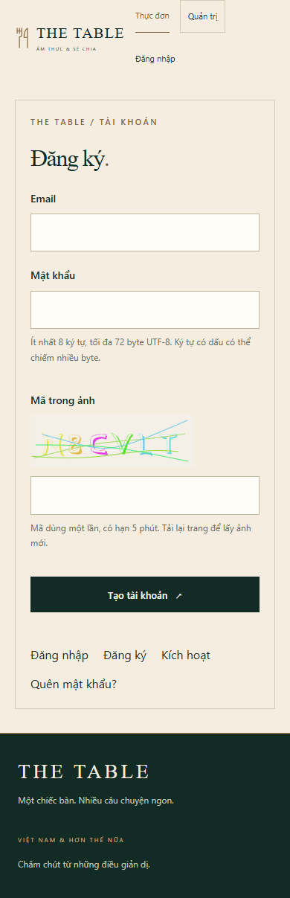
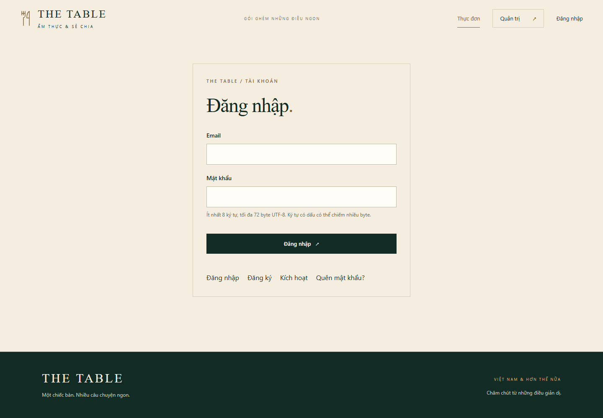
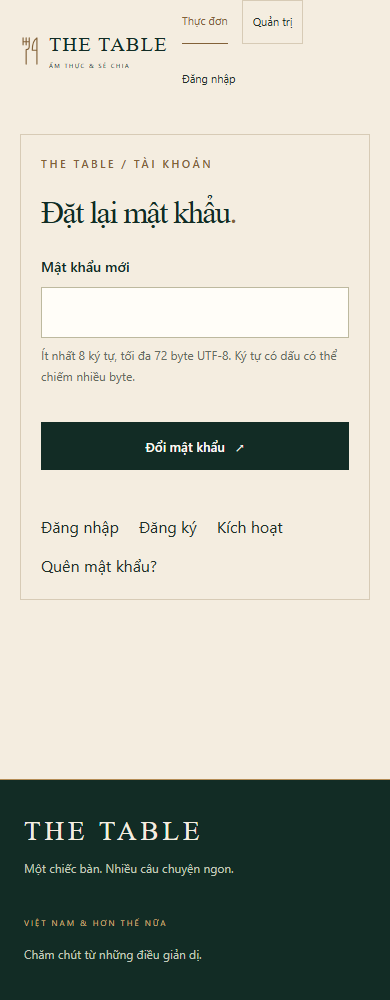

Block 08 / The Table Authentication SSR
01 / Phương án và bằng chứng
Authentication cho The Table Block 8 · Express SSR, EJS, Prisma và PostgreSQL
Đăng ký và xác minh email
16 slide chính + 5 phụ lục · 15–20 phút, có demo trực tiếp
Thời lượng: 30 giây
Lời trình bày Bài trình bày đi từ yêu cầu đến cơ chế trong mã nguồn, sau đó chứng minh bằng request và trạng thái lưu tại server. Các slide demo có ảnh giao diện từ bộ kiểm thử cô lập để dự phòng.
Bằng chứng và thao tác Không điền tên hoặc mã sinh viên khi chưa có thông tin. Bấm N để mở ghi chú. Sáu câu hỏi phản biện được gắn vào các chủ đề liên quan.
Đối chiếu Tài liệu yêu cầu do người dùng cung cấp. Mã nguồn Block 8.
Block 08 / The Table Authentication SSR
02 / Phương án và bằng chứng
Yêu cầu và phạm vi triển khai Authentication áp dụng cho cụm quản trị. Thực đơn tiếp tục phục vụ khách chưa đăng nhập.
Yêu cầu Phương án trong Block 8 Điểm cần chứng minh Đăng ký và kích hoạt CAPTCHA ảnh, user pending, OTP email CAPTCHA sai không tạo user hoặc gửi OTP Đăng nhập SSR bcrypt + session-cookie, 303 sau login Chỉ user active được vào CRUD Chống brute force Bộ đếm email/IP trong PostgreSQL Đổi cookie không đặt lại số lần sai CRUD và đăng xuất Middleware /admin, CSRF, hủy session HTTP trực tiếp cũng bị chặn Quên mật khẩu Reset token một lần, hủy mọi phiên cũ GET không tiêu thụ, POST mới đổi password
/dishes công khai. /admin cần user active. Server luôn gán role viewer, hiện chưa có RBAC.
Thời lượng: 45 giây
Lời trình bày Đây là phạm vi đã chốt với người dùng. Cụm CRUD quản trị yêu cầu đăng nhập, còn danh sách và chi tiết thực đơn công khai. Không diễn giải role viewer thành quyền chỉ đọc vì code hiện cho mọi user active dùng CRUD.
Trả lời phản biện Các route công khai phục vụ xem thực đơn hoặc thực hiện auth trước đăng nhập. Mỗi POST vẫn phải kiểm tra CSRF và các điều kiện riêng.
Bằng chứng và thao tác Đối chiếu GET /dishes với GET /admin/dishes khi không có cookie. Ma trận đầy đủ các yêu cầu nằm ở phụ lục A1 và evidence.html.
Đối chiếu src/app.ts: auth.requireLogin và các route /admin. src/auth.ts: register gán role viewer.
Block 08 / The Table Authentication SSR
03 / Phương án và bằng chứng
Kiến trúc authentication trên SSR Browser gửi form HTML. Server kiểm tra quyền và làm việc trực tiếp với store.
BrowserForm và cookie sid
→ Express + EJSSession, active user, CSRF
→ PrismaRepository và transaction
→ PostgreSQLAuth và dữ liệu CRUD
express-session quản lý vòng đời phiên.bcrypt băm và so khớp password.svg-captcha vẽ ảnh, crypto sinh đáp án.Nodemailer SMTP gửi OTP và link reset.EJS render form, lỗi và trang 429.Dependency injection tách mailer/store/thời gian để kiểm thử.SMTP là kênh gửi thư của server. Browser không nhận credential SMTP, OTP thô hay khóa HMAC từ API.
Thời lượng: 1 phút
Lời trình bày Không thêm JWT hoặc REST API JSON cho giao diện auth. Browser gửi form về Express; express-session giải quyết phiên, các kiểm tra nghiệp vụ ở router và repository. Store session thật nằm ở PostgreSQL. Test thay repository và mailer mà không tạo route bypass production.
Bằng chứng và thao tác Chỉ vào hai đường giao tiếp: browser–server và server–SMTP. Giải thích dependency giả là công cụ test, không phải bằng chứng SMTP hoặc database thật.
Đối chiếu src/auth.ts: authentication(deps). src/auth-store.ts: PrismaAuthRepository, PersistentSessionStore. src/auth-mail.ts: smtpMailer.
Block 08 / The Table Authentication SSR
04 / Phương án và bằng chứng
Sáu model quản lý trạng thái auth Trạng thái tài khoản, thử thách, phiên và bộ đếm nằm trong schema block8.
User email · passwordHash
Email chuẩn hóa và duy nhất ActivationChallenge userId · purpose · otpHash
lastSentAt kiểm soát gửi lại PasswordReset userId · tokenHash
Một bản ghi hiện hành cho mỗi user Session id = SHA-256(sid)
userId rỗng với phiên ẩn danh AuthRateLimit id = HMAC(scope, key)
Email/IP không lưu thô trong khóa CaptchaChallenge owner · purpose · answerHash
owner gắn phiên ẩn danh Liên kết user qua userId là liên kết logic trong code. Schema hiện chưa khai báo foreign key cho các bảng auth.
Thời lượng: 50 giây
Lời trình bày Không cần đọc mọi cột. Nhấn mạnh ai sở hữu một thử thách, còn hạn hay không, đã dùng chưa và trạng thái có cho phép truy cập hay không. Session dùng SHA-256 của sid làm id database. Bảng AuthRateLimit cũng chứa dấu đánh dấu thu hồi sid để response chạy đồng thời không tái tạo session đã hủy.
Bằng chứng và thao tác Chỉ dùng bản ghi demo đã che khi thu thập bằng chứng thật. Không trình bày sơ đồ như có FK vật lý vì schema chưa khai báo quan hệ Prisma.
Đối chiếu prisma/schema.prisma. src/auth-store.ts: Session lưu digest(sid), destroy ghi dấu revoked.
Block 08 / The Table Authentication SSR
05 / Phương án và bằng chứng
Bcrypt bảo vệ password lưu trong database Cost 12, salt riêng mỗi lần băm. Validation giữ nguyên password người dùng nhập.
src/auth.ts · lược trích, xuống dòng lại
const passwordHash =
await bcrypt.hash(req.body.password, 12);
const matches = await bcrypt.compare(
req.body.password, user.passwordHash
);Salt tự sinh: cùng một password có thể cho hai hash khác nhau. Đăng nhập dùng compare, không so hai chuỗi hash mới.
Ít nhất 8 ký tự Unicode. Tối đa 72 byte UTF-8. Ký tự có dấu và emoji có thể chiếm nhiều byte.Không trim password. Khoảng trắng là một phần dữ liệu.Bất đồng bộ: tác vụ băm không chặn event loop trong khi chờ kết quả.Thời lượng: 45 giây
Lời trình bày bcrypt và scrypt là hai thuật toán khác nhau. Dự án dùng bcrypt theo lựa chọn người dùng. Lệnh await chờ kết quả tại handler trong khi phép băm bất đồng bộ chạy ngoài event loop. Cost 12 là tham số công việc, không phải độ dài password hay số lần băm tuyến tính. Test tạo hai hash của cùng password và so sánh được bằng compare.
Bằng chứng và thao tác Dùng test password 7/8 ký tự, biên 72 byte và Unicode. Đoạn mã trên lược bỏ nhánh dummyHash và validation để dễ đọc; chỉ dẫn mã đầy đủ trong nguồn.
Đối chiếu src/auth.ts: validPassword, register, login, reset. test/auth.test.ts: bcrypt password boundaries.
Block 08 / The Table Authentication SSR
06 / Phương án và bằng chứng
Đăng ký xác minh CAPTCHA trước khi tạo user Server kiểm tra mọi điều kiện. Dữ liệu role từ form không quyết định quyền tài khoản.
Rate limit10 request/giờ/IP
→ CAPTCHAOwner, purpose, hạn
→ ValidationEmail và password
→ BcryptCost 12
→ Pending + OTPGửi qua SMTP
src/auth.ts · thứ tự trong POST /register
if (!await consumeCaptcha(req, 'register'))
return form(req, res, 'register', error, 400);
// Sau đó validate và bcrypt.hash(..., 12)
const user = {
email, passwordHash,
status: 'pending', role: 'viewer'
};Lược trích cấu trúc, bỏ các trường id/thời gian và transaction.
Email được trim + lowercase , giữ dấu chấm và phần +tag. CAPTCHA thiếu/sai: không tạo user, không gửi OTP. Email mới/trùng: cùng phản hồi 303 tới activate. Đăng ký trùng không thay password của user đã có. Thời lượng: 1 phút
Lời trình bày CAPTCHA được kiểm tra trước bcrypt nhằm tránh chi phí băm khi thử thách chưa đạt. Dữ liệu đầu vào được chọn lọc, user tạo mới luôn pending/viewer. Unique email ở database và transaction xử lý cạnh tranh. Trả cùng phản hồi cho email mới và email đã tồn tại để hạn chế dò tài khoản.
Bằng chứng và thao tác Bằng chứng R01/R06 và C01/C02. Chụp Network và đếm user/email trong môi trường test. Không diễn giải phản hồi 303 thành đã xác minh email.
Đối chiếu src/auth.ts: POST /register, normalizeEmail, consumeCaptcha, issueOtp. test/auth.test.ts: registration CAPTCHA precedes creation/email.
Block 08 / The Table Authentication SSR
07 / Phương án và bằng chứng
OTP kích hoạt đúng user và dùng một lần Mã ngẫu nhiên 6 chữ số, purpose activation, hạn 10 phút và chỉ lưu HMAC.
User pending nhập mã ở POST /activate. Kiểm tra khóa, purpose, hạn, usedAt và HMAC. Đúng mã: đặt active, emailVerifiedAt và usedAt. Chuyển 303 tới login, người dùng đăng nhập ở bước riêng. Điều kiện Hành vi Sai / hết hạn / đã dùng Cùng thông báo lỗi Sai 5 lần Khóa 15 phút, trả 429 Gửi lại Chờ 60 giây, thay mã cũ attempts sau resend Giữ nguyên OTP dùng ở /login Không khớp password bcrypt
Pending có thể có phiên ẩn danh để giữ CSRF/CAPTCHA. Phiên đó không có quyền truy cập CRUD.
Thời lượng: 1 phút
Lời trình bày HMAC gắn userId và nhãn activation, không lưu mã thô. Tiêu thụ mã và kích hoạt user trong transaction. Resend giữ attempts và lockedUntil. Khi khóa hết hạn, nhánh xác minh mới đặt lại attempts để cho một đợt thử mới. Thành công không gắn userId xác thực vào session.
Trả lời phản biện Pending bị từ chối ở login dù password đúng. Middleware còn kiểm tra user active mỗi request. Resend không reset attempts, việc hết khóa được xử lý riêng ở bước xác minh.
Bằng chứng và thao tác R01–R08. Chụp bản ghi User/ActivationChallenge trước và sau, email OTP đã che. Dùng lại mã cũ sau resend, kiểm tra attempts. GET /admin sau activate vẫn phải chuyển về login.
Đối chiếu src/auth.ts: issueOtp, POST /activate và /activate/resend.
Block 08 / The Table Authentication SSR
08 / Phương án và bằng chứng
Cookie sid và session là hai phần khác nhau Cookie ở browser tham chiếu tới trạng thái tại server, không mang password hay role để tự cấp quyền.
Browser Set-Cookie · dạng minh họa đã che
sid=[sid-B]; Path=/;
HttpOnly; SameSite=Lax;
Expires=[thời điểm hết hạn]
// Secure khi chạy production HTTPSsid có chữ ký. Nhãn sid-A/sid-B chỉ dùng để so sánh, không phải giá trị cookie thật.
PostgreSQL Session Bản ghi · cấu trúc minh họa
id: SHA-256(rawSid)
userId: [demo-user]
data: { authVersion, csrf, ... }
expiresAt: [hạn cố định 8 giờ]Phiên ẩn danh có userId rỗng. Server đối chiếu status và authVersion trước khi cho vào CRUD.
Login thành công: regenerate() đổi sid, lưu phiên xong mới trả 303 /admin/dishes.
Thời lượng: 1 phút
Lời trình bày Cookie có chữ ký xác thực định danh phiên. Dữ liệu session nằm ở PostgreSQL qua custom express-session Store. Database key là digest của raw sid, không phải chuỗi cookie có chữ ký đầy đủ. HttpOnly hạn chế JavaScript đọc cookie; SameSite góp phần giảm gửi cookie khác site; CSRF vẫn được kiểm tra riêng.
Trả lời phản biện Xóa cookie chỉ khiến browser không gửi định danh nữa. Bản ghi server vẫn có thể còn cho tới khi hết hạn hoặc bị hủy. Logout phải hủy bản ghi tại server.
Bằng chứng và thao tác S02/S04. Chụp Application/Cookies và Network Set-Cookie đã che. Khi chạy localhost HTTP, Secure tắt đúng cấu hình development; không dùng ảnh đó để khẳng định đã quan sát Secure ở production.
Đối chiếu src/auth.ts: sessionMiddleware, POST /login. src/auth-store.ts: PersistentSessionStore.
Block 08 / The Table Authentication SSR
09 / Phương án và bằng chứng
Session qua restart và quy trình đăng xuất Độ bền phụ thuộc store PostgreSQL và secret ổn định qua các lần khởi động.
Qua restart Giữ cookie sid-B còn hạn. Khởi động lại server, giữ cùng database và secret. Gửi lại request /admin/dishes. Quan sát 200 và bản ghi Session vẫn còn. Logout POST /logoutCó CSRF
→ Hủy sessionServer
→ Xóa cookieBrowser
Dùng lại sid-B 303 Location: /login
Kết quả cần quan sát. Chưa có ảnh PostgreSQL thật để khẳng định ở môi trường người dùng.
Store ghi dấu thu hồi để response chạy đồng thời không tái tạo session đã logout. Thời hạn session cố định 8 giờ.
Thời lượng: 1 phút
Lời trình bày Test HTTP tái tạo application với cùng MemoryAuthRepository chứng minh contract store nhưng chưa đủ kết luận độ bền PostgreSQL. Integration test đã có cho Prisma client mới, cần kết nối kiểm thử riêng để chạy. Bằng chứng thật cần giữ cùng cookie và truy vấn bản ghi digest tương ứng sau restart.
Trả lời phản biện Xóa cookie không hủy bản ghi server. Session sống qua restart được chứng minh bằng database và HTTP, không bằng việc giao diện vẫn đang mở trong tab cũ.
Bằng chứng và thao tác S05/S06. Chuẩn bị cookie jar trước logout, giữ riêng để gửi lại. Không xóa cookie thủ công rồi dùng việc bị chuyển login làm bằng chứng logout server thành công.
Đối chiếu src/auth-store.ts: get, set, destroy, touch. integration/auth-database.ts: persistence test.
Block 08 / The Table Authentication SSR
10 / Phương án và bằng chứng
CAPTCHA và giới hạn chống brute force Giải đúng CAPTCHA chỉ cho phép đi tiếp tới bước kiểm tra password.
3
Lần đăng nhập sai Yêu cầu CAPTCHA từ các lần tiếp theo.
10
Lần sai trong cửa sổ Khóa email 15 phút, trả trang 429.
60
Request / 15 phút / IP Độc lập với bộ đếm theo email và cookie.
Ảnh svg-captcha vẽ từ đáp án sinh bằng crypto. Thử thách gắn owner/purpose, hạn 5 phút, dùng một lần. Bộ đếm lưu ở server, khóa email/IP bằng HMAC. CAPTCHA không ngăn mọi bot hoặc người giải thuê. Đang bị giới hạn: trả 429 + Retry-After , kể cả password/CAPTCHA đúng. Xóa cookie không xóa số lần sai.
Thời lượng: 1 phút 15 giây
Lời trình bày Cửa sổ đếm sai theo email là 15 phút. Sau lần sai thứ ba server hiển thị CAPTCHA, và các POST tiếp theo thiếu hoặc sai CAPTCHA bị chặn trước bcrypt. Đạt mười lần sai thì lockedUntil tính từ thời điểm đó thêm 15 phút. Đúng CAPTCHA với password sai tiếp tục tăng count. Chỉ đăng nhập thành công xóa bộ đếm sai theo email; bộ đếm IP vẫn còn.
Trả lời phản biện CAPTCHA làm tăng chi phí tự động hóa, không bảo đảm chặn mọi cuộc tấn công. Bộ đếm và thời gian chờ giới hạn tốc độ thử dù CAPTCHA đã được giải.
Bằng chứng và thao tác C03–C07. Dùng test đã chuẩn bị hoặc tài khoản đã gửi đủ request thật. Đừng sửa ngưỡng production chỉ để demo nhanh. Bằng chứng 429 phải có status server và Retry-After.
Đối chiếu src/auth.ts: loginState, consumeCaptcha, POST /login, limited.
Block 08 / The Table Authentication SSR
11 / Phương án và bằng chứng
Middleware bảo vệ CRUD và form CSRF Thứ tự kiểm tra quyết định phản hồi và ngăn handler nghiệp vụ chạy khi chưa đủ điều kiện.
Parse formPOST, _method
→ Session + useractive, authVersion
→ /admin guardChưa login: 303
→ CSRFSai/thiếu: 403
→ CRUDMới đọc/ghi dữ liệu
src/app.ts · lược trích nguyên thứ tự
app.use(auth.sessionMiddleware, auth.locals);
app.use('/admin', auth.requireLogin);
app.use(auth.csrf, auth.router);
// Sau đó khai báo route CRUDKiểm tra cả danh sách, form thêm/sửa/xóa và thao tác ghi. Công cụ HTTP trực tiếp cũng đi qua middleware.
Request Kết quả cần chứng minh Chưa login, POST CRUD 303 /login, dữ liệu không đổi Đã login, thiếu/sai CSRF 403, handler không ghi dữ liệu User trở lại pending / version cũ Không dùng được session cũ GET trang xác nhận xóa Chỉ hiển thị, chưa xóa
Thời lượng: 1 phút
Lời trình bày Middleware đặt trước toàn bộ route quản trị, không chỉ ẩn nút ngoài giao diện. CSRF là synchronizer token gắn session, được đưa vào hidden field của mọi form thay đổi dữ liệu, kể cả auth. Method override chỉ nhận POST với _method PATCH/DELETE. Token xác nhận xóa tài nguyên hiện có là kiểm tra riêng ngoài CSRF.
Bằng chứng và thao tác S01/S07. Gửi POST trực tiếp với/không có cookie và với/không có _csrf. Chụp status và so dữ liệu trước/sau. Token hidden field là CSRF được phép xuất hiện trong form, khác đáp án CAPTCHA hoặc OTP.
Đối chiếu src/app.ts: middleware order và routes. src/auth.ts: locals, requireLogin, csrf.
Block 08 / The Table Authentication SSR
12 / Phương án và bằng chứng
Reset password thu hồi mọi session cũ Reset token ngẫu nhiên 32 byte, lưu SHA-256, hạn 30 phút và chỉ dùng một lần.
POST /forgotPhản hồi chung, rate limit
→ Email linkAPP_BASE_URL/reset?token=…
→ GET /resetKiểm tra, chỉ hiện form
→ POST /resetBcrypt và transaction
src/auth.ts · lược trích transaction reset
await tx.write('passwordReset', {
...row, usedAt: new Date(now())
});
await tx.write('user', {
...user, passwordHash,
authVersion: user.authVersion + 1
});
await tx.deleteSessions(user.id);Token mới thay token cũ của cùng user. GET giữ usedAt = null, không đổi password. POST thành công không tự đăng nhập. Middleware và store từ chối authVersion cũ. Thời lượng: 1 phút 15 giây
Lời trình bày Mật khẩu có entropy thấp dùng bcrypt, còn reset token có entropy cao dùng SHA-256 để tra cứu. GET nhận raw token từ email, xác minh hash và giữ digest trong anonymous session cho form tiếp theo; không echo raw token vào HTML. POST kiểm tra lại trong transaction để hai request cạnh tranh chỉ một request thành công.
Trả lời phản biện Database chỉ giữ tokenHash cùng userId, expiresAt và usedAt. Việc hủy phiên cũ cần cả bản ghi server không còn và request mang cookie cũ bị từ chối.
Bằng chứng và thao tác F01–F06. Chụp PasswordReset.usedAt trước/sau và User.authVersion. Dùng cookie cũ từ hai phiên độc lập, kiểm tra 303 /login sau reset. Không chỉ chụp cookie browser hiện tại đã bị xóa.
Đối chiếu src/auth.ts: forgot, GET/POST reset. auth-store.ts: atomic và deleteSessions.
Block 08 / The Table Authentication SSR
13 / Phương án và bằng chứng
Demo đăng ký và kích hoạt email Dùng tài khoản demo. Nếu SMTP chậm quá 15 giây, chuyển sang ảnh dự phòng đã thu thập.
Gửi form thiếu/sai CAPTCHA: user và OTP không được tạo. Đăng ký hợp lệ: quan sát 303, user pending, role viewer. Nhập OTP từ email và quan sát active, emailVerifiedAt. Mở /admin: vẫn chuyển login vì chưa đăng nhập. Mở trang đăng ký · R01–R08, C01–C02
Cần ghi lại Dấu hiệu Network POST /register, /activate; status Database status, usedAt, emailVerifiedAt Email Thư OTP đã che mã Cookies Phiên ẩn danh, chưa xác thực
Ảnh email và database thật: chưa thu thập.

Ảnh browser test cô lập, mobile, tắt JavaScript. Không phải chứng cứ gửi SMTP thật. Thời lượng: 1 phút 30 giây
Lời trình bày Mở DevTools trước khi gửi form, bật Preserve log. Mỗi thao tác nêu trước kỳ vọng rồi thực hiện. Chỉ mô tả đã gửi email thật nếu đã cấu hình và thấy thư tương ứng. Ảnh đang hiển thị là giao diện test với store/mailer giả, CAPTCHA vẽ bằng thư viện thật.
Trả lời phản biện Pending có thể giữ cookie cho session ẩn danh. Quyền CRUD chỉ có sau POST /login thành công, không phải sau activation.
Bằng chứng và thao tác Trước buổi trình bày: tự cấu hình SMTP và đồng bộ 6 bảng auth. Lỗi P2021 AuthRateLimit đã xuất hiện trong phiên làm việc, hiện chưa có xác nhận đã khắc phục. Không demo live khi prerequisite chưa hoàn tất.
Đối chiếu scripts/browser-check.ts. test/auth.test.ts. Hồ sơ evidence.html và DEMO.md.
Block 08 / The Table Authentication SSR
14 / Phương án và bằng chứng
Demo session, brute force và bảo vệ CRUD Dùng nhãn sid-A và sid-B, giữ cookie cũ riêng để kiểm tra tái sử dụng.
Login: sid-A đổi thành sid-B, có 303 tới quản trị. Restart: giữ sid-B và kiểm tra HTTP cùng bản ghi Session. POST CRUD thiếu CSRF: 403, dữ liệu không đổi. Minh họa 429 và Retry-After, sau đó logout và gửi lại sid-B. sid-B sau logoutKỳ vọng: 303 /login
Restart PostgreSQL và Network/Cookies thật: cần bổ sung.

Ảnh giao diện login từ browser test cô lập, desktop. Nhấp ảnh để mở lớn. Mở login · S01–S07, C04–C07
Thời lượng: 1 phút 45 giây
Lời trình bày Ưu tiên demo sid rotation, CSRF và logout. Restart thật chỉ thực hiện khi đã xác nhận database có bảng auth, secret ổn định. Chuẩn bị sẵn ảnh các ngưỡng brute force và dùng lại cookie sau restart, vì phần này dễ vượt thời lượng.
Trả lời phản biện Test tạo lại app với MemoryAuthRepository chỉ chứng minh hành vi ở môi trường cô lập. Cần dữ liệu PostgreSQL thật để khẳng định qua restart server thực tế.
Bằng chứng và thao tác Application/Cookies: che giá trị, giữ flags. Network: Set-Cookie, 303 Location, 403 hoặc 429 Retry-After. Database: digest sid-B còn sau restart, mất sau logout. Request trực tiếp cần dùng lại chính cookie trước logout.
Đối chiếu test/auth.test.ts: session rotation/restart/logout, CSRF, brute force. integration/auth-database.ts: kiểm thử thật chưa chạy trong phiên này.
Block 08 / The Table Authentication SSR
15 / Phương án và bằng chứng
Demo reset và từ chối cookie cũ Hai phiên đăng nhập cùng user giúp quan sát việc thu hồi trên toàn tài khoản.
Đăng nhập phiên A và B, giữ cookie riêng. Gửi forgot, mở link email: usedAt vẫn rỗng. POST reset thành công: password mới, authVersion tăng. Dùng lại cả hai cookie và link reset cũ: đều bị từ chối. Mở quên mật khẩu · F01–F06
Quan sát Kỳ vọng GET /reset Chỉ form, usedAt chưa đổi POST /reset 303 tới login, không tự login Session user A/B Bản ghi đã xóa Cookie cũ A/B 303 /login Token đã dùng Bị từ chối
Ảnh DB, email và cookie cũ thật: cần bổ sung.

Form reset từ browser test cô lập, mobile, tắt JavaScript. Token không xuất hiện trong ảnh. Thời lượng: 1 phút 30 giây
Lời trình bày Chuẩn bị hai browser profile hoặc một cửa sổ thường và một ẩn danh. Giữ cookie jar trước reset, không lấy cookie mới sau redirect để chứng minh cookie cũ bị từ chối. Link reset có token nhạy cảm, ảnh thanh địa chỉ phải che query token.
Bằng chứng và thao tác Chụp usedAt null sau GET, có giá trị sau POST. Chụp authVersion tăng và số Session của user bằng 0. Gửi lại token cũ cùng cookie trước reset. Nếu dùng clip hay ảnh từ test, nhãn môi trường cô lập phải giữ nguyên.
Đối chiếu src/auth.ts: reset. test/auth.test.ts: forgot/reset, concurrent consumption. DEMO.md.
Block 08 / The Table Authentication SSR
16 / Phương án và bằng chứng
Kết quả kiểm thử và bằng chứng còn thiếu Mức độ xác minh phải khớp với môi trường đã chạy, không suy ra từ ảnh giao diện.
24 tests HTTP, bảo mật và SSR/CRUD
4 cấu hình Desktop 1440 / mobile 390
Typecheck + build Đã chạy trong lần triển khai
Đã có Cần xác minh thêm Mã nguồn, HTTP tests, giao diện browser test PostgreSQL thật: schema đầy đủ, session qua restart Test rotation, OTP/reset một lần, CSRF và 429 SMTP thật: email OTP/reset và thời gian nhận thư Ảnh desktop/mobile dùng dữ liệu test Network, Cookies và bản ghi DB thật đã che
Thời lượng: 45 giây + phản biện
Lời trình bày Số 24 là tổng bộ test hiện có, bao gồm cả SSR/CRUD và auth, không phải 24 bài test PostgreSQL. Browser test có 4 tổ hợp viewport và JavaScript. Lần triển khai trước đã qua typecheck/build/browser; bộ test được chạy lại khi chuẩn bị bài trình bày. Chỉ tuyên bố test mới pass nếu log kiểm thử trong evidence xác nhận.
Bằng chứng và thao tác Kết quả test được lưu riêng trong evidence/test-results.txt. Chưa dùng credential thật, không mở .env hoặc chạy db:push. Nếu thu thập bằng chứng thật sau này, cập nhật trạng thái từng mã trong evidence.html và README.
Đối chiếu test/*.test.ts. scripts/browser-check.ts. integration/auth-database.ts. evidence/test-results.txt.
Block 08 / The Table Phụ lục kỹ thuật
A1 / Trả lời phản biện
A1 · Ma trận nghiệm thu đầy đủ Mỗi kịch bản có mã để liên kết giao diện, HTTP, cookie và bản ghi database.
Nhóm Mã Kịch bản từ yêu cầu Hồ sơ Đăng ký và kích hoạt R01–R08 Pending, OTP đúng/sai/hết hạn/dùng lại, resend, giới hạn, role, không tự login 8 kịch bản CAPTCHA / brute force C01–C07 Thiếu/sai, hợp lệ, reuse/purpose, ngưỡng CAPTCHA, tăng count, 429, đổi cookie 7 kịch bản Login / logout / CRUD S01–S07 Guard, login active, lỗi chung, đổi sid, restart, logout, CSRF 7 kịch bản Quên / reset password F01–F06 Phản hồi chung, giới hạn, token cũ/hết hạn/dùng lại, GET, POST, purpose 6 kịch bản Kiểm tra bổ sung X01–X05 Đăng ký trùng, password Unicode, reset đồng thời, không lộ secret, fixed expiry 5 kịch bản
Thời lượng: Phụ lục, mở khi được hỏi
Lời trình bày 28 kịch bản đến từ bốn bảng nghiệm thu trong bộ ảnh đầu. Năm mục bổ sung kiểm tra các chi tiết đã triển khai. Ma trận đầy đủ nằm trong evidence.html với mỗi kịch bản một dòng, không rút gọn mất yêu cầu.
Bằng chứng và thao tác Mỗi mã có UI, Network, Cookies, request trực tiếp và DB cần thu thập. Tên test là điểm đối chiếu, không phải ảnh bằng chứng thật. Phần chưa có bằng chứng phải giữ trạng thái chờ.
Đối chiếu Bộ ảnh yêu cầu gốc. test/auth.test.ts. evidence.html.
Block 08 / The Table Phụ lục kỹ thuật
A2 / Trả lời phản biện
A2 · Giới hạn, thời hạn và HTTP status Các ngưỡng được áp dụng ở server và lưu trong PostgreSQL.
Cơ chế Giới hạn Login theo email 15 phút, CAPTCHA từ 3 sai, khóa 15 phút khi đủ 10 Login theo IP 60 request / 15 phút Register theo IP 10 request / giờ Gửi OTP 60 giây chờ, 5/giờ/email, 20/giờ/IP Xác minh OTP theo IP 60 request / 15 phút Forgot 5/giờ/email, 20/giờ/IP POST reset 20 request / giờ / IP
Dữ liệu / phản hồi Giá trị OTP 6 chữ số, 10 phút, 5 sai khóa 15 phút CAPTCHA 5 phút, một lần; cấp tối đa 60/phút/IP Reset token 30 phút, một lần Session 8 giờ cố định 303 Sau thành công hoặc redirect login 400 / 403 Form/mã sai hoặc CSRF bị từ chối 429 + Retry-After Đang bị giới hạn
Resend giữ attempts. CAPTCHA đúng không xóa count. Login thành công xóa bộ đếm sai theo email, giữ rate limit IP.
Thời lượng: Phụ lục
Lời trình bày Gửi OTP tính cả lần đăng ký đầu tiên. Giới hạn OTP resend theo email/IP tách với cooldown. Khóa OTP hết hạn thì bước xác minh mới reset attempts. Khóa login kéo dài 15 phút tính từ lần sai chạm ngưỡng. Các dữ liệu có hạn có thể vẫn còn bản ghi sau khi hết hạn nhưng sẽ bị từ chối.
Bằng chứng và thao tác Đối chiếu Retry-After là số giây server trả, không chỉ đồng hồ JavaScript. Không dựa vào disabled button để chứng minh giới hạn.
Đối chiếu src/auth.ts: rate, loginState, issueOtp, activate, forgot, reset.
Block 08 / The Table Phụ lục kỹ thuật
A3 / Trả lời phản biện
A3 · Route công khai và middleware Các trang tài khoản cần truy cập trước login để người dùng có thể đăng ký và khôi phục truy cập.
Phạm vi Route Điều kiện Công khai GET /, /dishes, /dishes/:id và static assets Xem thực đơn Form auth GET /register, /activate, /login, /forgot Có thể tạo session ẩn danh / CAPTCHA Reset form GET /reset?token=… Token hợp lệ, chưa dùng, còn hạn Thao tác auth POST /register, /activate, /activate/resend, /login, /forgot, /reset CSRF + validation + challenge/rate limit tương ứng Đăng xuất POST /logout CSRF, hủy phiên hiện tại Cụm quản trị /admin và mọi route con, mọi HTTP method Session xác thực, user active, đúng authVersion
Parse body / method override → session + active user → guard /admin → CSRF → router auth hoặc handler CRUD.
Thời lượng: Phụ lục
Lời trình bày Các POST auth công khai theo nghĩa không yêu cầu đã đăng nhập, không có nghĩa bỏ xác minh. GET /reset không tự tiêu thụ token nhưng có thể lưu digest vào anonymous session. /logout được bảo vệ CSRF, không có GET logout đổi dữ liệu.
Bằng chứng và thao tác Nếu giảng viên hỏi viewer có sửa được không: trả lời có trong phạm vi hiện tại vì đây là authentication, chưa triển khai RBAC. Nếu hỏi list/details CRUD có công khai không: chỉ menu /dishes được giữ công khai theo quyết định phạm vi, các danh sách quản trị /admin đều khóa.
Đối chiếu src/app.ts: các route và thứ tự middleware. src/auth.ts: router.
Block 08 / The Table Phụ lục kỹ thuật
A4 / Trả lời phản biện
A4 · Cách lưu password và các loại mã Phương pháp lưu phụ thuộc loại dữ liệu và entropy, đồng thời phải gắn đúng mục đích sử dụng.
Dữ liệu Cách lưu Ràng buộc / tiêu thụ Password bcrypt, cost 12, salt tự sinh compare khi login; 8 ký tự đến 72 byte OTP activation HMAC-SHA-256 với khóa server Gắn userId + activation; expiresAt, attempts, usedAt Đáp án CAPTCHA HMAC-SHA-256 với khóa server Gắn challengeId + owner + purpose; dùng một lần kể cả sai Reset token SHA-256 của 32 byte ngẫu nhiên userId, expiresAt, usedAt; GET chỉ kiểm tra Session sid SHA-256(rawSid) làm id bản ghi Cookie có chữ ký, userId và authVersion phía server Khóa rate limit HMAC(scope + email/IP) count, windowStart, lockedUntil
Transaction Serializable với retry có giới hạn giúp tiêu thụ mã và cập nhật bộ đếm khi request chạy đồng thời. SMTP gửi sau transaction, không nằm trong transaction DB.
Thời lượng: Phụ lục
Lời trình bày Bcrypt tốn chi phí để bảo vệ password do người dùng chọn. Reset token và sid ngẫu nhiên entropy cao dùng SHA-256 để tra cứu. OTP chỉ 6 số và CAPTCHA ngắn dùng HMAC khóa server. OTP không dùng làm password và reset token không có quyền truy cập CRUD. Bí mật cấu hình chỉ nằm trong môi trường, .env.example là placeholder.
Bằng chứng và thao tác Không đưa raw token/OTP/sid/CSRF vào slide hoặc log. Các bảng minh họa là cấu trúc, không phải database export. Kiểm thử cạnh tranh đã có cho store giả, integration PostgreSQL cần chạy riêng.
Đối chiếu src/auth.ts. src/auth-store.ts. src/auth-mail.ts. prisma/schema.prisma.
Block 08 / The Table Phụ lục kỹ thuật
A5 / Trả lời phản biện
A5 · Bằng chứng và câu trả lời phản biện Mở đúng slide và đúng hồ sơ cho từng câu hỏi, giữ nguyên nhãn môi trường kiểm thử.
Câu hỏi Ý chính Slide / hồ sơ Cookie và session khác nhau? Browser giữ định danh; server giữ trạng thái. Logout hủy cả hai. 8–9 · S04/S06 Session sống qua restart? PostgreSQL, cookie và secret ổn định; cần HTTP + bản ghi DB. 9, 14 · S05 Vì sao CAPTCHA vẫn cần rate limit? CAPTCHA có thể được giải; bộ đếm giới hạn số lần thử. 10 · C04–C07 Pending và resend attempts? Không cấp session xác thực; resend giữ attempts. 7, 11 · R01/R04/R05 Route nào công khai? Thực đơn và các bước auth trước login; /admin cần active. 2, 11 · A3 Reset token và session cũ? Chỉ lưu hash; POST tăng version và xóa mọi session. 12, 15 · F03–F06
Thời lượng: Phụ lục
Lời trình bày Trả lời trực tiếp bằng cơ chế và sau đó chỉ bằng chứng. Không tuyên bố có ảnh Network, email SMTP hoặc DB thật khi mới có ảnh test harness. Nếu chưa xử lý thiếu bảng AuthRateLimit, ghi rõ demo live chưa sẵn sàng.
Bằng chứng và thao tác Trước buổi báo cáo kiểm tra checklist DEMO.md. Mọi sid-A/sid-B trong báo cáo phải là nhãn che nhất quán. Thư mục evidence/live dành cho bằng chứng thật đã che khi người dùng bổ sung.
Đối chiếu src/auth.ts, src/auth-store.ts, schema.prisma, test/auth.test.ts, integration/auth-database.ts. Bộ ảnh yêu cầu người dùng cung cấp.